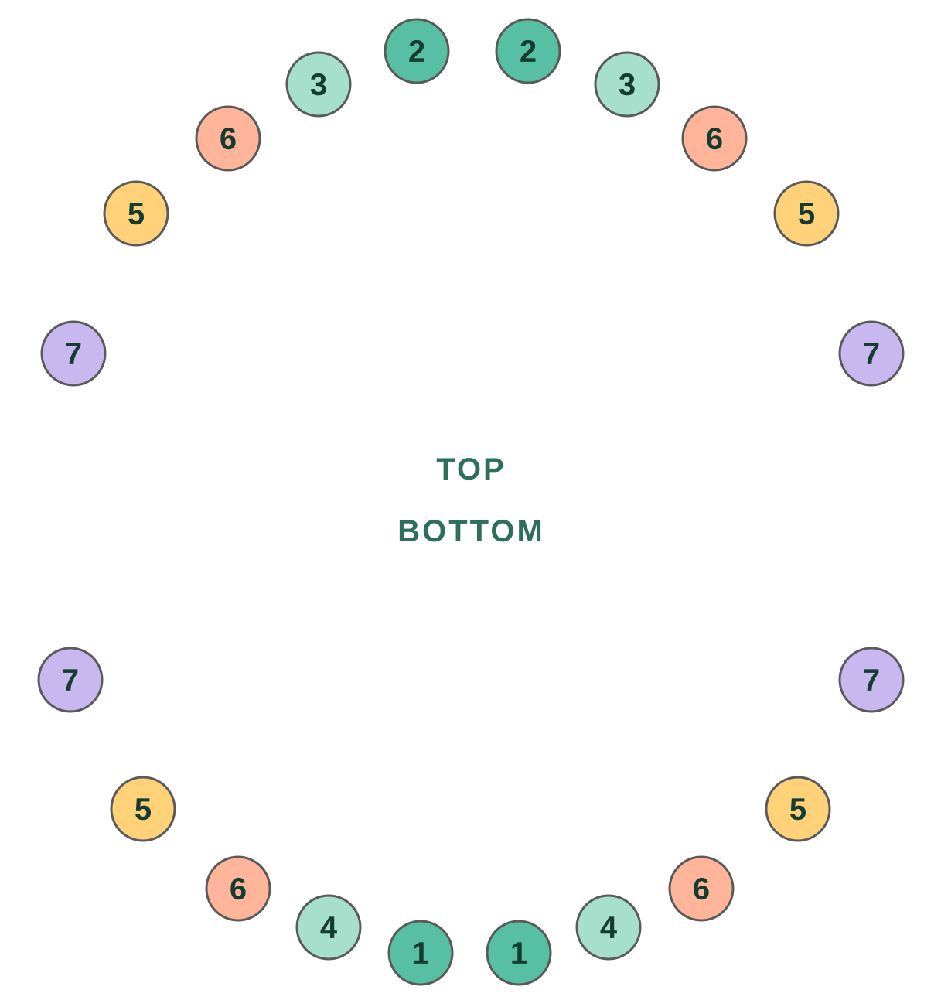

On this page · 9 sections
In short
Most babies get their first tooth around 6 months, although it usually comes in anywhere between 4 and 12 months, and some healthy babies get it a bit later. The lower central incisors usually come first, and all 20 baby teeth are in by about 2-3 years. Many babies do not follow the order in the charts, and it is almost always fine. See the doctor if there is still no tooth at 18 months.
- First tooth
- ~6 monthsusually between 4 and 12 months
- Usually first
- Incisorslower central ones
- Baby teeth
- 20all in by about 2-3 years
- See the doctor if
- 18 monthsand still no tooth
When the first tooth comes in
The first tooth usually shows up around 6 months. But “around” is wide here: some babies have one at 4 months and others reach their first birthday or a bit more with no teeth, and both are normal. Genetics play a big part: if you or your partner got teeth late, your baby probably will too.
When teeth come in earlier or later says nothing about how your baby is developing or how healthy their teeth will be.
In what order teeth usually come in
Books describe this usual order, in pairs:

| Teeth | Approximate age |
|---|---|
| 1Lower central incisors | 6-10 months |
| 2Upper central incisors | 8-12 months |
| 34Lateral incisors (top and bottom) | 9-16 months |
| 5First molars | 13-19 months |
| 6Canines (eye teeth) | 16-23 months |
| 7Second molars | 23-33 months |
When the order is not the textbook one
This chart is an average of many children, not a schedule your baby has to meet. In practice, many children pick their own order: the top ones come first, a canine shows up before the lateral incisors, or a molar jumps ahead. When it happens, it is easy to worry. Almost always it means nothing.
We saw it up close: a baby in our family got the lower molars first, and the lateral incisors did not show up until a month and a half later. For those weeks the gap stood out and gave us something to think about. In the end they came in on their own, and nothing was wrong.
What does deserve a visit is not the order, but a long time with no teeth at all, or anything that does not feel right to you. More on that below.
Note when each tooth shows up
Keep it in the Raffy diary next to feeds, sleep and growth, and have it handy at the next checkup.

Teething symptoms
Some babies cut teeth without anyone noticing; others have a harder time. In the days before a tooth comes through, it is common for your baby to:
- Drool more than usual and get irritated skin on the chin.
- Put everything in their mouth and want to bite.
- Have swollen or reddened gums.
- Be more irritable or sleep a little worse.
Does teething cause fever? It has always been said that it does, but it does not. When a tooth comes in, the temperature can rise by a few tenths of a degree, without reaching a fever. If your baby has 38 °C (100.4 °F) or more, diarrhea, vomiting or a cold, do not blame teething, and see the doctor as you would at any other time.
What about the irritated bottom? Another very common belief, but there is no evidence that teeth cause it. Diaper rash is usually down to moisture, friction or a change in poop, and it is treated like any other time.
How to ease the discomfort
- Massage the gums with a clean finger for a couple of minutes.
- Give a firm teether chilled in the fridge, never the freezer: extreme cold can hurt the gum.
- Wipe the drool often with a soft cloth to prevent irritation.
- If they already eat solids, something cold and soft (like chilled mashed fruit) can soothe them, always under supervision.
- If it hurts a lot, ask your pediatrician whether they can have acetaminophen (paracetamol) and at what dose for their weight.
What to avoid
- Amber or teething necklaces and bracelets: there is no evidence they help, and the FDA and the AAP warn of choking and strangulation risk.
- Gels or creams with benzocaine or lidocaine: the FDA advises against using them for teething: they offer little or no benefit and can cause serious problems, such as a blood condition that reduces oxygen (methemoglobinemia).
- “Homeopathic” teething tablets or gels: there is no evidence they work and they can contain harmful substances.
- Dipping the pacifier or teether in sugar, honey or liquor. Honey, besides, must not be given before age 1 because of the risk of botulism.
Pediatric safety: when to see the pediatrician
- At 18 months, no tooth has come in.
- Fever of 38 °C (100.4 °F) or more, diarrhea or vomiting: do not blame the teeth. If under 3 months and it reaches 38 °C, call right away.
- Refuses to eat or drink, or has far fewer wet diapers than usual.
- A tooth comes in broken, stained or an odd color, or the baby is born with a tooth.
- Something does not feel right to you, even if it is not on this list.
This article is educational and does not replace your pediatrician's assessment.
Frequently asked questions
Is it normal for my baby to have no teeth at 1 year?
Yes. Some healthy babies get their first tooth after their first birthday. Mention it at the checkup, and see the doctor if no tooth has come in by 18 months.
Is it normal for molars to come in before the incisors?
It can happen and it almost always does not matter. The order in the charts is an average; many children follow their own and the missing teeth end up coming in weeks or months later.
Does teething cause fever?
It can raise the temperature by a few tenths of a degree, but it does not cause a fever of 38 °C (100.4 °F) or more. If they have one, look for another cause with your pediatrician.
How long does the discomfort last for each tooth?
It is usually noticeable for a few days before and while the tooth comes through, and then it passes.
When should I start brushing their teeth?
From the first tooth, twice a day, with a child-size toothbrush and a smear of fluoride toothpaste the size of a grain of rice.
Sources
- American Academy of Pediatrics · HealthyChildren.orgTeething: 4 to 7 months
- American Dental Association · MouthHealthyBaby teeth
- American Dental Association · MouthHealthyPrimary tooth development: eruption age chart (PDF)
- FDASafely soothing teething pain in infants and children
- NHS (UK)Baby teething symptoms
We checked this article against these sources on Nov 11, 2026. It is educational, not medical advice. Editorial policy